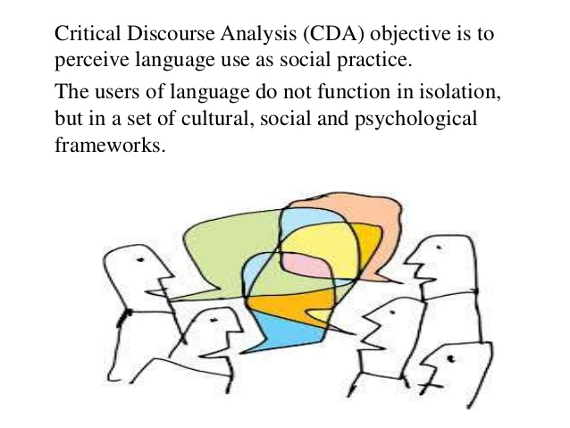

I've spoken about what I call "strategisation" before.This involves dressing something up as particularly strategically apposite. The example I gave is this assertion:
Services will continue to make a growing contribution to economic activity in Australia. It is therefore important to remove unnecessary restrictions on service provision — particularly barriers to entry and expansion that impede competition.
The word 'therefore' is misleading — suggesting that there's some overarching strategic reason for not getting in ones own way. It's always useful not to get in one's own way, and if there's a reason not to do so (for instance because some change will exacerbate some other problem — say tax evasion) then that issue should be dealt with on its merits, not because it ties in with your 'strategic' talking points. In that vein I'd like to introduce "theorisation" (as opposed to "theorise"). Theorisation dresses some analysis in theory but it turns out the 'theory' is just window dressing — a proof of work if you will, locating the piece either within some talking points as with strategisation or within some academic sub-discipline. This piece is about an interesting and very important phenomenon, the way language is used to obfuscate, euphemism and all that good Orwellian stuff — in this case in the discourse of customer-facing offshore banking (AKA tax minimisation, or possibly evasion.) The author is an anthropologist — so it's a 'yes' from me. There's lots to be learned from ethnography, discourse analysis and so on. It begins:
Some thirty years ago, Gal called for scholarly attention to be paid to “the construction of power and political hierarchy in everyday and ritual talk, and the linguistic as well as symbolic aspects of world-wide political economic processes”
Mentioning Foucault among a blizzard of subsequent academics, the author then says "As the above scholars show, treating the language used by actors as discourse brings a number of salient characteristics surrounding it into relief, especially as these pertain to political economy". This was the first intimation I got that there was no 'there' there. Had I been more suspicious I'd have asked "So what does treating language 'as discourse' do that George Orwell didn't do. In any event, in the next section setting out the "Theoretical Approach" the paper offers this as a theoretical approach.
To analyze langue de bois [the French expression for 'spin' — literally wooden tongue], I draw inspiration from a guiding premise of Critical Discourse Analysis (CDA) – namely, that the power wielded by individuals and institutions can be de-mystified by means of analyzing their discourse (Wodak and Meyer 2015, 3). Originating in the 1980s, CDA treats language use (in speech and text) as a dialectical social practice: one that shows how the discourse of actors shapes, and is shaped by, the contexts, institutions, and structures in which it takes place (Fairclough and Wodak 1997; Blommaert and Bulcaen 2000).
Anyway, one is entitled to wonder what will be brought forth — how CDA created a body of theory that will help us go further than Orwell or Foucault. Anyway, dear reader, I doubt you'll be surprised to hear that nothing much happens. The language used in Luxembourg's financial centre as its enablers help investors from around the globe to minimise their tax on $5 trillion dollars is self-serving in precisely the way we're familiar with.
For example, even as financial-center officials (re)produce, even exacerbate, unequal power relations among different classes of people within the world-system, they frame their activities discursively in positive langue de bois – such as “protecting family assets,” “safeguarding entrepreneurs,” “ensuring tax efficiency,” and “promoting economic growth.” In this sense, langue de bois endures because of its simplicity and plasticity, as discourses that are equal parts reductionist, ahistorical, and easy to comprehend.
Yep, all true, but we could have learned that without the theoretical apparatus.
That "therefore" is indeed pretentious theorisation, but worse it is an obvious non-sequitur of the sort that shows the writer was not thinking about what they were writing at all.